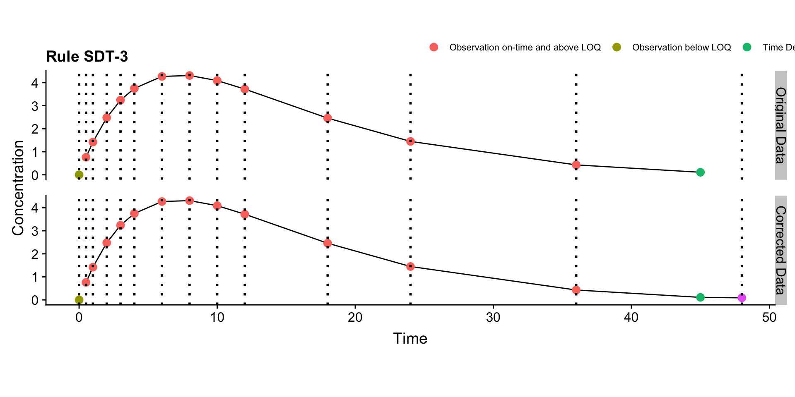

Chapter 9 MDT
9.1 MDT-1
## Warning: `panel.margin` is deprecated. Please use `panel.spacing` property
## instead
9.2 MDT-2
## Warning: `panel.margin` is deprecated. Please use `panel.spacing` property
## instead
9.3 MDT-3
## Warning: `panel.margin` is deprecated. Please use `panel.spacing` property
## instead